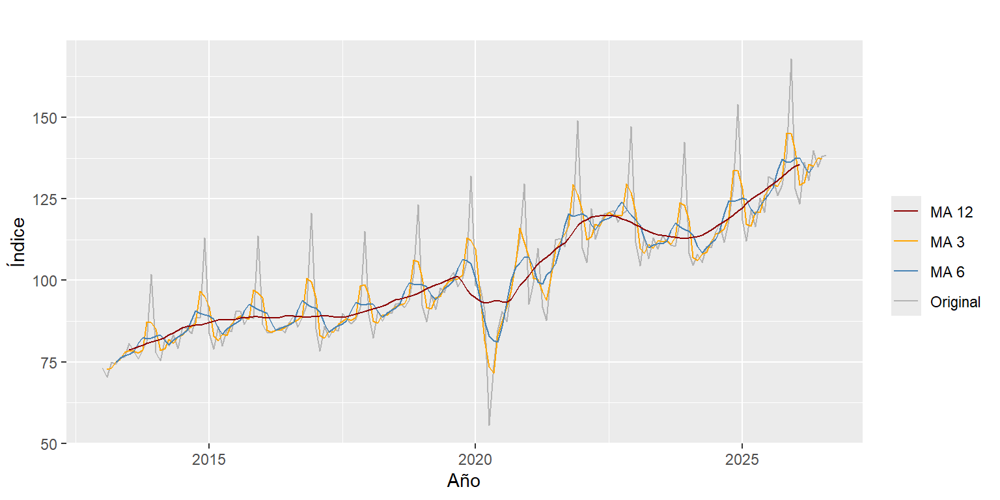

Capítulo 3 Promedio móvil
Un promedio móvil de orden m reemplaza cada mes por el promedio de los m meses alrededor de él. Así se suavizan las subidas y bajadas de corto plazo y se ve mejor la tendencia. Si el orden es 12, el promedio incluye un año completo y la estacionalidad se cancela.
Se calculan promedios de orden 3, 6 y 12 con la función ma():
autoplot(y, series = "Original") +
autolayer(ma(y, 3), series = "MA 3") +
autolayer(ma(y, 6), series = "MA 6") +
autolayer(ma(y, 12), series = "MA 12") +
scale_colour_manual(values = c(Original = "grey70", "MA 3" = "orange",
"MA 6" = "steelblue", "MA 12" = "darkred")) +
labs(x = "Año", y = "Índice", colour = "")
Figura 3.1: Serie original y promedios móviles de orden 3, 6 y 12.
En la Figura 3.1 el promedio de orden 3 todavía sigue los picos de diciembre y el de orden 6 sigue ondulando cada año. El de orden 12 ya no tiene esos picos, lo que confirma que el ciclo estacional dura 12 meses.
La línea del promedio de orden 12 muestra la tendencia de la serie y sus ciclos:
- 2013 a 2019: crecimiento constante.
- 2020: caída por la pandemia.
- 2021 y 2022: recuperación por encima del nivel de 2019.
- 2023: caída (el promedio anual pasó de 119,7 a 113,9).
- 2024 a 2026: nueva subida.